Retrocomputación en Game Boy Advance
Por Ivan Parkhomchyk Patapchyk
Enfoque de la redacción
Este artículo se centra en el análisis técnico y hace uso de herramientas con fines educativos. No para infringir la propiedad intelectual ni la distribución de software no permitda.
Primera revisión del modelo de GBA.
La GBA es una consola portátil fabricada, vendida por Nintendo y lanzada en 2001 durante la sexta generación de videoconsolas. Respecto a su antecesora, fue un cambio muy notorio al introducir paleta de colores, mayor resolución, nuevas entradas (botones L y R) y registros de 32 bits (en GB son 8 bits). Todos los títulos de GB son compatibles en GBA y se distribuían en formato de cartucho físico. 1
Arquitectura hardware
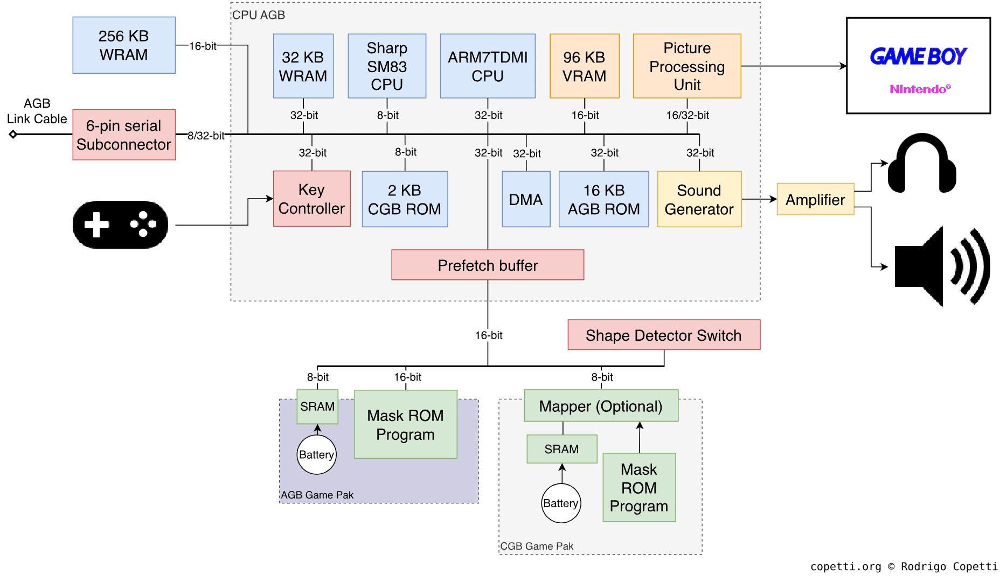
Diagrama de arquitectura interna del hardware de GBA.
El diagrama proporcionado ilustra la arquitectura interna de GBA 5. Compuesto por un componente denominado CPU AGB que aglomera componentes importantes para el sistema. Dicha CPU se compone principalmente de dos procesadores:
-
Un procesador heredado Sharp SM83 de 8 bits para títulos de Game Boy (DMG) y Game Boy Color (CGB).
-
Un procesador nuevo ARM7TDMI de 32 bits para títulos de GBA.
La razón por la que motiva la inclusión del primer procesador no es otra que la retrocompatibilidad 3. Patrón que repetiría en futuras generaciones de consolas por parte de la empresa japonesa tales como NDS 5 o 3DS 6. Aunque para el caso de esta última videoconsola el fabricante oculta información sobre ello 4.
En la GBA solo un procesador está activo pero no a la vez según el cartucho cargado 3. Al contrario que en futuras consolas, donde existe una interaoperabilidad activa entre dos procesadores de distinta generación dentro del dispotivo como por ejemplo en la NDS (ARM9 y ARM7) 5.
Características de ARM7TDMI
La irrupción que supuso ARM en su época sigue estando todavía más en la actualidad. Con presencia en ordenadores, móviles, videoconsolas y otros dispositivos 7. Concretamente, el procesador ARM de GBA se rige por una filosofía RISC 15:
-
Instrucciones de tamaño fijo.
-
16 registros de propósito general de 32 bits frente a los 8 de 8 bits en su antecesora 2.
-
Ejecución condicional. Esto es que toda instrucción reserva información de si debe ejecuarse o no además de evitar riesgos de control.
-
Multiplicación de 32 y 64 bits. Para este último caso, el resultado se reparte en dos registros (Sigla M de TDMI).
-
No implementa caché.
-
Funcionamineto con 3 voltios.
-
Se ejecuta a 16,78 MHz 10.
-
Conjunto de instrucciones Thumb (Sigla T de TDMI).
-
Facilidad para proporcionar opciones para depurar, concretamente: puerto JTAG y EmbeddedICE (Siglas D y I de TDMI).
Cauce
Para maximizar el rendimiento y reducir tiempos muertos, implementa una canalización (pipeline) de tres etapas. Esto significa que el ciclo de instrucción se divide en tres etapas distintas que operan simultáneamente sobre tres instrucciones diferentes 15:
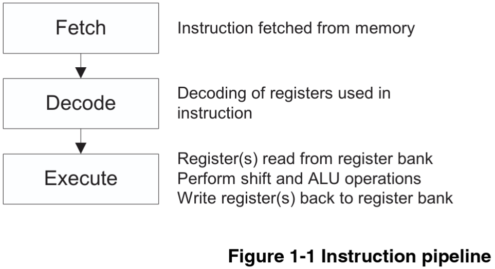
Etapas del cauce de ARM7TDMI: (1) Fetch Búsqueda de la instrucción, (2) Decode Decodificación de los contenidos de los registros y (3) Execute Ejecución de la instrucción (lectura desde el banco de registros, realizar operaciones aritmético lógicas y escritura de vuelta en los registros).
De esta forma, mientras la instrucción \(A\) se ejecuta, \(B\) se está decodificando y \(C\) se está buscando. Aumentando el número de instrucciones ejecutadas por tiempo (Throughput).
El uso de un cauce superpuesto introduce problemas clásicos de la arquitectura de computadores 8 que el procesador ARM7TDMI resuelve de formas específicas:
-
Riesgos por dependencias de datos: Ocurre si una instrucción necesita el resultado de otra anterior que aún no ha terminado. A diferencia de otras arquitecturas de la época que delegaban este problema al programador o al compilador, ARM lo gestiona por hardware por inserción de burbujas.
-
Riesgos de control: Cuando hay bifurcaciones en el código. La arquitectura ARM resuelve mediante la anulación condicional, es decir, las instrucciones erróneas que ya estaban en el cauce se anulan automáticamente y se convierten en operaciones de relleno (NOP), perdiendo ciclos de reloj.
Esta característica convierte al ARM7TDMI en un procesador extremadamente eficiente y hace que la programación a bajo nivel en GBA requiera un enfoque distinto al de otras arquitecturas como x86 o MIPS 10.
Conjunto de instrucciones
Dentro de este procesador existen dos modalidades de operación que habilitan un conjunto de instrucciones y registros diferentes. No obstante, es posible intercambiar el modo funcionamiento durante la ejecución de un programa 10 15 3.
-
Codificadas en 32 bits.
-
Conjunto completo de instrucciones ARM.
-
Ofrece ejecución condicional.
-
Eficiencia base.
-
16 registros para uso general.
-
Codificadas en 16 bits.
-
Son subconjunto (subset) de instrucciones ARM.
-
No tiene la capacidad de ejecución condicional.
-
Más eficientes (al ocupar menos la codificación).
-
8 registros para uso general.
Mapas de memoria
La memoria de la GBA se distribuye de la siguiente manera 10 12 :
00000000-00003FFF BIOS (16 KBytes)
00004000-01FFFFFF Sin uso
02000000-0203FFFF EWRAM | Work RAM en el cartucho (256 KBytes)
02040000-02FFFFFF Sin uso
03000000-03007FFF IWRAM | Work RAM en la placa (32 KBytes)
03008000-03FFFFFF Sin uso
04000000-040003FE IO RAM | Registros de I/O
04000400-04FFFFFF Sin uso
05000000-050003FF PAL RAM | Memoria para paletas (2 paletas para 256 entradas con colores de 15 bits) (1 Kbyte)
05000400-05FFFFFF Sin uso
06000000-06017FFF VRAM | Video RAM (96 KBytes)
06018000-06FFFFFF Sin uso
07000000-070003FF OAM | OBJ Attributes (Control de sprites) (1 Kbyte)
07000400-07FFFFFF Sin uso
08000000-09FFFFFF PAK ROM | Game Pak ROM/FlashROM (max 32MB) - Wait State 0
0A000000-0BFFFFFF PAK ROM | Game Pak ROM/FlashROM (max 32MB) - Wait State 1
0C000000-0DFFFFFF PAK ROM | Game Pak ROM/FlashROM (max 32MB) - Wait State 2
0E000000-0E00FFFF Card RAM | Game Pak SRAM (max 64 KBytes) - 8bit Bus width
0E010000-0FFFFFFF Sin uso
10000000-FFFFFFFF Sin uso (4 bits más significativos sin uso)
Gráficos
La GBA cuenta con una pantalla LCD a color TFT de 240 x 160 píxeles con una tasa de refresco aproximada de 59.73 Hz y a través de la PPU (Pysics processing unit) renderiza 9. Sin embargo y aparentemente la consola puede manejar una pantalla de mayor resolución para el scrolling. 13 . Cada actualización de pantalla (frame) se divide en 11:
- VDraw (160 líneas): Periodo donde el hardware dibuja fondos y sprites. Cada línea incluye un tiempo de dibujo (HDraw) y un periodo en blanco (HBlank).
- VBlank (68 líneas): Periodo en blanco al final de la pantalla. Los periodos HBlank y VBlank son momentos seguros para que los programadores modifiquen los gráficos sin causar errores visuales (artefactos).
Como se ha mostrado antes, hay secciones de memoria dedicadas al rederizado de vídeos: VRAM, OAM, PAL RAM. 10 12
La GBA reitera alguno de los mecanimos desarrollados en generaciones de videoconsolas anteriores como la GB o la SNES. Pudiendo emplearse para títulos "3D" o puramente bidimensionales. La GBA tiene 6 modos de vídeo configurables en el registro REG_DISPCNT, divididos en dos categorías principales: baldosas o mapa de bits. 3
Vídeo 2D
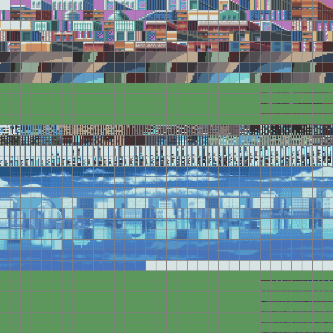
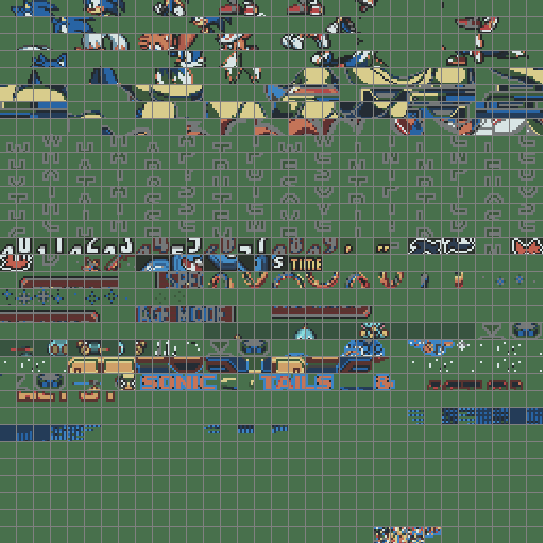
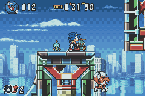
Segmentación de bloques de baldosas de un frame de Sonic Advance 3 3. (1) Tiles del escenario, (2) del fondo, (3) sprites para personajes e interfaz del juego y (4) resultado final de combinar capas.
Se compone de los siguientes ítems 3:
-
Tiles: Imágenes base de 8x8 píxeles (de 16 o 256 colores). Se agrupan en charblocks (bloques de 16 KB) dentro de los 96 KB totales de VRAM.
-
Fondos: Dependiendo del modo, se pueden tener hasta 4 capas. La información de cómo se organizan los tiles se llama Tile Map, estructurada en screenblocks de 32x32 tiles.
-
Sprites: Elementos móviles de hasta 64x64 píxeles (o 128x128 si se escalan). Tienen atributos de posición, volteo, tamaño y, crucialmente, pueden aplicar transformaciones afines (rotación y escalado).
La unidad PPU trata su renderizado pero espera de antemano su agrupación en charblocks (regiones contiguas de 16 KB) y afecta a un tipo capa (sprites o fondo). Por las limitaciones de la consola puede manejar hasta 6 charblocks (4 para el fondo, y dos para sprites). Contamos con los siguientes modos de vídeo para baldosas: 10 12 2 13 9 14
4 capas de fondo estáticas (texto), sin rotación ni escalado.
3 capas de fondo: 2 estáticas y 1 con capacidad de transformación afín (rotación y escalado).
2 capas de fondo, ambas con capacidades afines (rotación y escalado).
Vídeo 3D
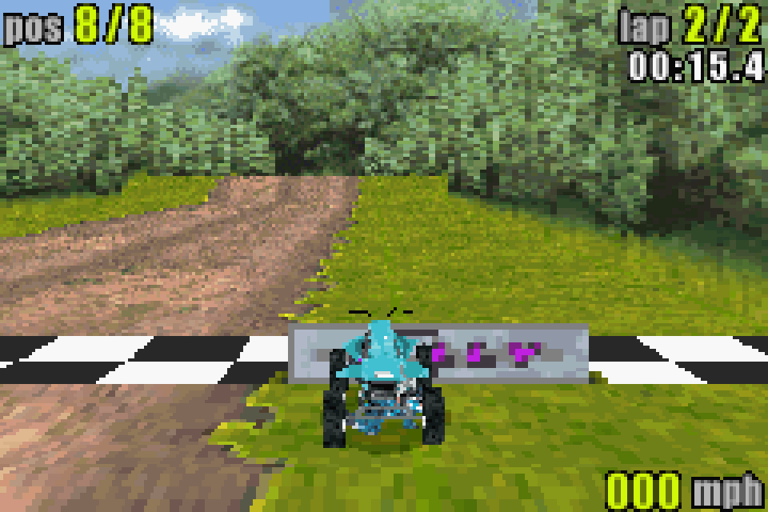
Títulos de GBA que aprovechan el vídeo en 3D.
Los modos de mapa de bits (Framebuffer) permiten manipular píxeles individuales, ideal para gráficos 3D rudimentarios o video, pero tienden a un consumo elevado de CPU y limitan la memoria para sprites (máximo 64). No utilizan el motor de tiles, delegando el trabajo al procesador. La GBA tiene tres modos dedicados a esta funcionalidad 13 3:
Un solo framebuffer de 240x160 a todo color (16 bits). No permite page flipping (intercambio de páginas) por falta de memoria.
Dos framebuffers de 240x160 con paleta de 256 colores (8 bits). Permite page flipping.
Dos framebuffers a todo color (16 bits) pero a menor resolución (160x128). Permite page flipping.
Progamación a bajo nivel. Ingeniería inversa.
La principal dificultad a la hora de trabajar a bajo nivel es que la tarea en cuestión presenta entre poca o nula documentación oficial que especifique el comportamiento en detalle del programa. Es por esta razón poco transparente por la que mucho del software es forzosamente descontinuado u obsoleto 18.
"Todo el software es de código abierto si sabes ensamblador." - Anónimo (Atribuida a la cultura hacker de los 90)
La ingeniería inversa es el estudio de un servicio final para determinar el diseño del servicio, la interacción entre módulos que lo componen o comportamientos plausibles en general. Los componentes electrónicos y programas informáticos son los que más suelen someterse a este tipo de procedimientos 19. Aplicar ingeniería inversa requiere un profundo conocimiento sobre el objeto. Ejemplo clásico: SAMBA-SMB 20.
Algunos puntos clave sobre este campo 21:
-
Conocimientos a bajo nivel (leer binarios, conocer arquitecturas, hardware).
-
Proceso muy utilizado en la seguridad e integridad de programas (buscar fallos, violaciones del segmento, filtraciones de memoria...). Por ejemplo: Implementación de mecanismos DRM con Denuvo en videojuegos 22.
-
Es un trabajo muy bien remunerado por las destrezas requeridas.
-
Otros usos: detección de plagio o uso de librerías con licencias inadecuadas, búsqueda de malware, reconstrucción de código fuente desde el binario 21.
-
No obstante, hay software que prohíbe la ingeniería inversa dados sus términos y condiciones de uso y/o licencia de uso. Esta debe prevalecer para evitar violar la propiedad inetelectual y la carta de "cese y desista" 58.
-
La estrategia de caja negra es vital para reconstruir comportamientos de programas 23.
En este artículo, nos familiarizaremos con el tooling básico que conscierne al desarrollo en GBA. Es muy importante, que este tipo de prácticas se lleven a cabo en entornos controlados así como desechables en caso de ser infectados. Cabe mayor cautela con software malintencionado pues no se le exhíbe mágicamente no escapar del entorno aislado (caso de escape del aislamiento de VirtualBox 24)
Habitualmente para la ingeniería inversa de software se gastan las algunas de las siguientes utilidades. Aunque muchos de los programas integran más funcionalidades que solo la que aparece citada.
Editor de código
Esta aplicación informática agiliza la edición de código fuente de programas. En la actualidad, muchos permiten la extensión de sus funcionalidades por medio de paquetería externa o plugins. Algunos de los cuales:
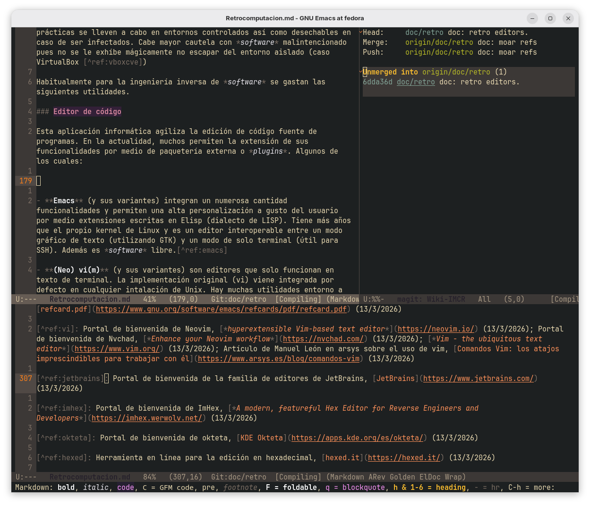
Ventana de Emacs editando este artículo.
-
(Neo) vi(m) (y sus variantes) son editores que solo funcionan en texto de terminal. La implementación original (vi) viene integrada por defecto en cualquier intalación de Unix. Hay muchas utilidades entorno a sus variantes en la actualidad por la comunidad. Este es software libre y de código abierto. 27
-
Emacs (y sus variantes) integran un numerosa cantidad funcionalidades y permiten una alta personalización a gusto del usuario por medio extensiones escritas en Elisp (dialecto de LISP 26). Tiene más años que el propio kernel de Linux y es un editor interoperable entre un modo gráfico de texto (utilizando GTK) y un modo de solo terminal (útil para SSH). Además es software libre. 25
-
La familia de editores JetBrains tienen licencias de código abiertas comunitarias (con retricciones) y de pago. Solo funcionan bajo un entorno gráfico completo. Son pesados en cuanto al rendimiento. 28
Otras opciones son: Codium, Notepad++, Kdevelop, VS Code, Antigravity, Cursor...
Visor de hexadecimal
Los programas citados en esta clase de software se centran principalmente facilitar el examen a nivel de bytes de archivos binarios.
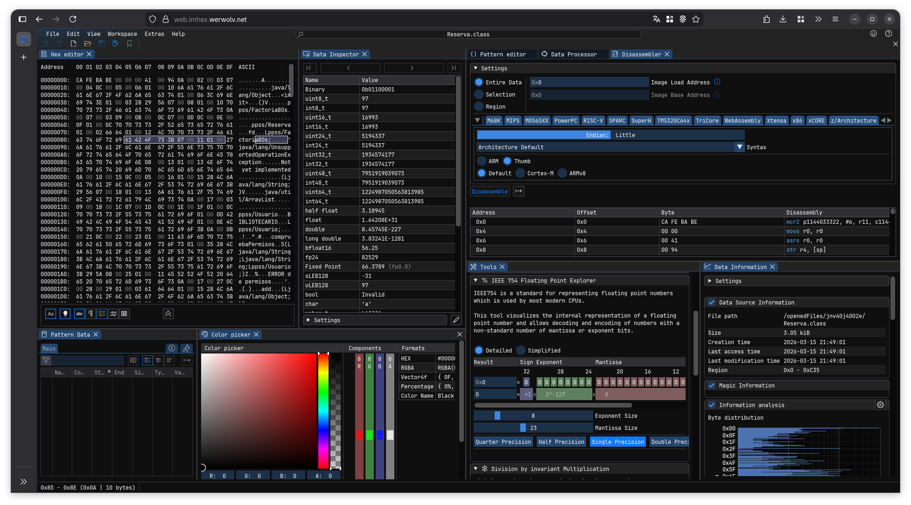
Ventana de Firefox ejecutando offline (esto es posible gracias a Service Workers 29 y WebAssembly 30) ImHex 32 en su formato web para examinar un compilado .class de Java.
-
ImHex es una navaja suiza multiplaforma de código abierto para este tipo de cuestiones. Puede extenderse su funcionalidad con extensiones, temas, decompiladores... 32 31
-
okteta es una utilidad más sencilla que se centra en la lectura y edición de binarios. Es libre y trae complementos para convertir datos entre tipos y otros. 33 31
-
hexed.it se vende como un servicio en línea gratuito (freeware) 31 que sirve para lo mismo pero con funcionalidades restringidas. 34
Para una lista detallada de otros programas que cuadren en esta categoría pueden encontrarse en internet. 31
Compilador
El compilador no es más ni menos que un programa que toma código fuente de entrada y lo transforma en otra salida (pudiendo producir binarios, otros fuentes...). 35
En práctica de GBA utilizaremos las utilidades que vienen con el kit de desarrollo
Utilizaremos una versión customizada de gcc de devkitpro para compilar las ROMs de GBA.
Algunas de las opciones más reconocidas son gcc, clang, msvc, llvm. Aunque también cabe considerar otros lenguajes dependiendo del enfoque del área al que se le quiere aplicar la inversa (webassembly, solidity, swift...). 36
Depurador
Aplicación de computadora que permite examinar la ejecución paso a paso de un programa a base de controles sobre este.
En práctica de GBA utilizaremos las utilidades que vienen con el kit de desarrollo
Utilizaremos una versión customizada de gdb de devkitpro para compilar las ROMs de GBA. En la práctica, gastaremos la opción de la depuración remota.
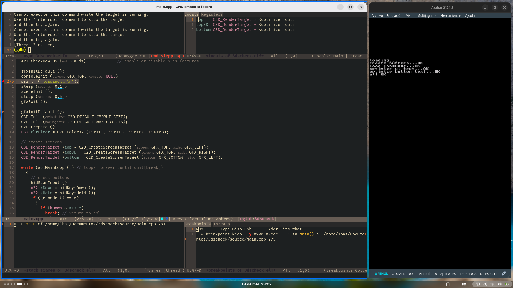
Escritorio con gdb y el emulador 3DS para depurar un programa homebrew. En la captura se aprecia que: en la izquierda un cliente gdb está conectado a un stub de gdb por emulador, hay un punto de ruptura en la línea 275 (imprimir loading...\n, bola roja), ejecución actual en la línea 275 (flecha rosa), creación de otros hilos y con la pestaña de registros de ARMv11 por enseñar. En la derecha, un emulador 3DS controlado por el stub del depurador.
-
gdb es un clásico y la opción más estable y estándar de facto en entornos Unix-like. 17
-
edb es un depurador usado en la ingeniería inversa. 37
Es posible que alguno de los siguientes programas que aparezcan en secciones posteriores pueda del mismo modo depurar código o hacerlo de forma manual.
Desensamblador, decompilador
Un decompilador es un programa dedicado a relizar la operación inversa de un compilador. Por medio de la aplicación de conocimientos y heirísticas tratan de traducir código máquina a un plausible código fuente de alto nivel al programador. Esto es una técnica que precisa de tener conocimiento exhaustivos del compilador que se ha hecho servir a un programa y encontrar patrones/rutinas comunes en los programas. Un desensamblador, a diferencia de un decompilador, solo traduce el código máquina a ensamblador. Este último la tarea de decodificar cada instrucción bit a bit. Cabe remarcar que debido a la riqueza de lenguajes de programación que experimentamos hoy en día, existen decompiladores especializados en determinados lenguajes de programación (especialmente, los que utilizan un bytecode intermedio). 38
No obstante, una decompilación ética debe seguir ciertas normativas legales para evitar infringir leyes y propiedades. 38
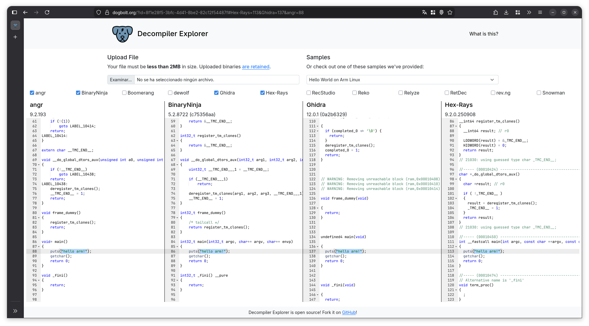
Ventana de Firefox ejecutando Dogbolt 39 para decompilar un ejemplo de hola mundo para Linux ARM. No todos los decompiladores decompilan de misma forma.
A menudo y a parte de proporcionar un código de alto nivel o traducido al ensamblador, estas aplicaciones se suelen complementar con otras utilidades que agilizan la inspección: Detección de tipos, coloreado de código, visualización strings, grafo CFG, idenficación de funciones, recocimiento de bibliotecas externas, depuración... 46
Listado de algunos decompiladores/desensambladores:
-
Ghidra es uno de los más populares, de código abierto y es desarrollado por la Agencia Nacional de Seguridad de los EE.UU. 41
-
Hexrays / IDA Pro es un potente decompilador de pago. Cuenta con un gran reconocimiento en el nicho de la ingeniería inversa. 40
-
Cutter / Rizin es una herramineta reciente de código abierto que integra algunas de las características adicionales. 42
Hay recursos enteros en línea dedicados a la decompilación. 46
Inspectores de memoria
Aunque también son conocidos como visores o escáneres de memoria, consisten en proporcionar en tiempo de real el estado del mapa de memoria. Habitualmente los programas emuladores ya vienen con esta función. El uso de un visor principalmente, se utiliza para alterar partes de la memoria que afecten a la ejecución o que tengan un impacto secundario. Esta función requiere acceso al kernel para monitorear todo y cualquier modificación sin cuidado puede propiciar comportamientos erróneos. 47
Por ejemplo, Cheat Engine o GameConqueror pueden ser utilizados para hacer trampas. 48 49
Aislamiento
Es muy aconsejable, cuando hagamos ingeniería inversa hacerlo en entornos aislados o desechables. Pero nunca sobre nuestra máquina si ello implica la ejecución de código malicioso o uno erróneo reconstruido por nosotros. Hay ocasiones en las que es imposible hacer ejecución directamente porque alguno de los componentes del computador del ordenador destino no son compatibles.
Podríamos destacar al menos tres mecanismos 50:
-
La emulación posibilita ejecutar programas de arquitecturas hardware diferentes a las del equipo original (Por ejemplo: mgba para emulación de consolas retro en x86 54).
-
Los contenedores simulan un sistema operativo ligero pero con aislamiento de otros programas (Por ejemplo: desplegar en Docker).
-
Una capa de compatibilidad ejecuta programas de otros sistemas operativos utilizando los mínimo recursos del sistema operativo original (Por ejemplo: ejecutar programas de Windows en Fedora Linux).
Legalidad de emulación
Los emuladores en la cultura popular tienden a asociarse como software ilegítimo. Pero nada lejos de la realidad, la mayoría son de código abierto y no infringen propiedad intelectual alguna siempre. Además de aclarar la no vinculación con marcas 55. Numerosas sentencias judiciales han determinado que hacer emuladores es legal 56 57 pero no siempre es así teóricamente existen si indicios de violaciones de los derechos sobre la propiedad (utilización de información de leaks para obtener una copia temprana) 58.
Otra cuestión relativa a la emulación de títulos es la obtención de estos mismo títulos: pues debe hacerse desde una copia de la licencia original (sin permiso de distribución) o software casero (habitualmente conocido como homebrew*). 59
Herramientas de desarrollo (práctico)
Antes de empezar con la sesión práctica es menester conocer que utilizaremos un SDK desarrollado por la comunidad para compilar nuestros programas homebrew*.
¿Por qué utilizar un SDK? Un SDK es un conjunto de herramientas que nos provee para un fácil desarrollo. Principalmente utilizaremos un compilador y un depurador que esté especializado en trabajar con programas de GBA, pero también nos provee de otras utilidades y de ejemplos.
¿Qué SDK vamos a utilizar? Hay SDKs oficiales de los fabricantes pero estos suelen ser propietarios. Lo cual limita los usos que podamos dar. Sin embargo, la comunidad que envuelve a la consola GBA ha podido desarrollar todo tipo recursos (documentación, vídeos, guías, programas como las utilizadas en este artículo). Por lo que nos decantaremos por opciones de código abierto y siempre que no violen ninguna propiedad.
Algunos de los ejemplos son: devKitPro16, GB Studio52, Löve Potion51... Incluso empresas de renombre han aprovechado la madurez de estos proyectos para promociones53. En la práctica utilizaremos devKitPro por su versatilidad.
Para la sesión práctica, asumiremos que utilizamos un UNIX-like y docker. Pero también se puede hacer desde otros sistemas como Windows y/o optar por una instalación manual en el sistema siguiendo la guía oficial de devKitPro a través del gestor de paquetería de pacman (no del AUR) si lo prefieres.
Práctica 0: Preparación del entorno inicial. Experimentación. Configuración.
Esta parte hace enfoque en la preparación del entorno de experimentación. Crea un directorio nuevo para todo lo que vayamos a hacer aquí.
Instalando devKitPro
En esta sección utilizaremos Docker con el que ya muchos estaremos familarizados para crear una imagen del kit con los ejecutables y bibliotecas necesarias.
Para facilitar la instalación devKitPro, emplearemos una imagen de docker. Copia el siguiente contenido en un archivo Dockerfile.
Ejecutamos en una shell lo siguiente para reconstruir la imagen para tener el SDK localmente.
Para confirmar que se ha instalado correctamente, mostraremos la versión del compilador con el comando típico de gcc --version:
Y debería aparecer una salida como esta:
Problemas con Docker
Si te ha salido error, consulta el artículo de Docker para probar diferentes soluciones. Prueba algunas de estas soluciones:
-
Comprueba tu conexión a Internet.
-
Comprueba que tu disco no esté lleno.
-
No sigas este tutorial si estás utilizando Docker dentro de una máquina virtual.
-
Instala el SDK localmente. (Tiene ventajas)
-
Reinicia el ordenador.
-
Actualiza drivers.
-
Evita utilizar máquinas virtuales mientras emplear Docker.
Instalando tooling
A continuación procederemos a bajarnos ImHex, cutter y mgba. Para una conviente instalación utilizaremos el formato de aplicación portable AppImage de cada una. Este formato garantiza que cierto software pueda ejecutarse independientemente de las bibliotecas del sistema y de permisos de un usuario en el ordenador (no necesitamos elevación de permisos). En contraposición pueden discrepar en el renderizado de interfaces gráficas y pueda requerir la instación de librerías como fuse para su ejecución.
Crea el fichero install_tools.sh con el siguiente contenido:
#!/bin/bash
BIN_DIR="$(pwd)/bin"
echo "Creando directorio $BIN_DIR..."
mkdir -p "$BIN_DIR"
descargar_appimage() {
local repo=$1
local patron_busqueda=$2
local nombre_final=$3
echo -e " [*] Buscando $nombre_final ($repo)..."
local download_url=$(curl -sL "https://api.github.com/repos/$repo/releases/latest" \
| grep "browser_download_url" \
| grep -i "$patron_busqueda" \
| head -n 1 \
| cut -d '"' -f 4)
if [ -z "$download_url" ]; then
echo " [E] No hay AppImage válido para $nombre_final."
return 1
fi
echo " [-] Descargando $download_url"
curl -L --progress-bar "$download_url" -o "$BIN_DIR/$nombre_final"
chmod +x "$BIN_DIR/$nombre_final"
echo " [+] $nombre_final instalado correctamente."
}
descargar_appimage "mgba-emu/mgba" "appimage-x64.appimage" "mgba"
descargar_appimage "WerWolv/ImHex" "x86_64.AppImage" "imhex"
descargar_appimage "rizinorg/cutter" "Linux-x86_64.AppImage" "cutter"
echo "Todo instalado correctamente"
Una vez escrito los contenidos del script, procedamos con la ejecución del mismo.
Este paso es opcional, pero siempre es una buena práctica que el software descargado funciona. Dado que lo hemos ejecutado por AppImage prueba a ejecutarlo así:
bin/mgba --appimage-extract-and-run
bin/imhex --appimage-extract-and-run
bin/cutter --appimage-extract-and-run
Incluso si lo prefieres, puedes abrir el explorador de archivos gráfico (nemo, dolphin, nautilus...) sobre el directorio de los binarios y hacer doble clic para abrir cada programa.
Nos deberían aparecer tres ventanas y esto nos confirma su adecuado funcionamiento. ¡Ciérralas ahora!
Método alternativo
Si no te fias del script proporcionado o ha fallado, puedes descargar (y también compilar el código fuente** desde los repositorios oficiales.
Copiando ejemplos
El kit que hemos instalado tiene códigos de ejemplo para probar y compilar. Copiála con el siguiente commando:
Si al ejecutar este comando tienes errores o no puedes acceder al directorio copiado (problemas de permisos), prueba con al siguiente opción.
Este comando hace lo mismo que el anterior pero le dice al Docker con qué usuario propietario realizar la orden.
Genial ahora tenemos los ejemplos en el directorio ejemplos_gba. Estos ejemplos están escritos en C siguen una programación bastante diferente con que estamos familiarizados. Cabe recordar esta consola solo cuanta con un sistema BIOS y no un sistema operativo completo.
(Opcional) Configurando el editor
Si vamos a utilizar un editor de código, nos beneficiaremos del autocompletado de código. En este sentido necesitaremos el programa clangd. Luego configuraremos nuestro editor para utilizar la integración con clang y dehabilitar otras (para los usuarios de vscode y derivados).
La mayoría detectan a la primera si está clangd instalado por su correspondiente integración/extensión en el editor de preferencia. Pero otros no y requieren pasos adicionales como por ejemplo: la configuración de clangd para eglot para los modos de C adjuntada.
;;;; * lsp eglotters
(use-package eglot
:hook ((c-mode c++-mode) . eglot-ensure)
:bind
("C-c r" . eglot-rename)
("C-c c" . eglot-code-actions)
:config
;;;; ** Languages
;;;; *** C/C++
(add-to-list 'eglot-server-programs
'((c++-mode c-mode)
. ("clangd"
"--background-index"
"--clang-tidy"
"--header-insertion=iwyu"
"--completion-style=detailed"
"--function-arg-placeholders=0"
"--fallback-style=GNU"))))
No obstante, cuando vayamos a editar seguirán habiendo errores en el código fuente de un programa totalmente válido. Para ello, hemos de configurar el clangd concretamente para que incluya las bibliotecas de devKitPro para su procesado.
clangd si está activo siempre acudirá a la raíz de nuestro proyecto e intentará leer un archivo denominado .clangd. Configurar este archivo suele ser un dolor de cabeza porque pocas veces se editan y menos cambiarlos. Más el hecho de que estamos combinando herramientas de gnu con las de clang. Por ello debemos tener en cuenta que implicaciones pueda tener:
-
No todos los compiladores de c/c++ soportan las mismas características. Ni menos si el estándar de c++ se actualiza constantemente. Pueden haber funciones del lenguaje que no estén disponibles, en otro sí, pero en otro están solo si se hace presenta determinada bandera.
-
En acolación, el uso de banderas o parámetros puede hacer que un programa completamente válido y compilable en un compilador deja de serlo para otro por el uso de banderas no reconocidas.
-
Por ello, es común asegurarse que el código compila en diferentes compiladores y no solo en uno. 60
Sin embargo, utilizaremos esta combinación de herramientas para conveniencia. Así que declara el siguiente contenido en un archivo llamado clangd-gba-rules.mk.
¿Sabias que la exensión .mk...?
La extensión .mk es utilizada también para referirse a makefiles en un contexto donde el proyecto es demasiado grande como para contenerlo todo en un Makefile único. Como solución a este problema, se aplica divide y vencerás para segmentar el Makefile en pequeños módulos .mk. Esto tiene la ventaja de poder establecer qué módulos poder ejecutar. Esto es muy recurrido para compilar android en un determinado modelo de teléfono que no soporta determinadas características.
Puedes considerar la modificación de los comandos del docker si no funcionan.
CLANGD = .clangd
LOCAL_HEADERS = .headers
INCLUDE_PATHS_DOCKER = \
"-I$(shell pwd)/include" \
"-I$(shell pwd)/$(LOCAL_HEADERS)/libgba/include" \
"-I$(shell pwd)/$(LOCAL_HEADERS)/arm-none-eabi/include" \
"-lgba" \
"-lm"
INCLUDE_PATHS_LOCAL = \
"-I$(shell pwd)/include" \
"-I/opt/devkitpro/libgba/include" \
"-I/opt/devkitpro/devkitARM/arm-none-eabi/include" \
"-lgba" \
"-lm"
.PHONY: docker local
docker:
@mkdir -p $(LOCAL_HEADERS)/libgba
@mkdir -p $(LOCAL_HEADERS)/arm-none-eabi
@docker run --rm -u $(shell id -u):$(shell id -g) -v "$(shell pwd):/project:Z" gba-toolchain cp -r /opt/devkitpro/libgba/include ./$(LOCAL_HEADERS)/libgba/ || true
@docker run --rm -u $(shell id -u):$(shell id -g) -v "$(shell pwd):/project:Z" gba-toolchain cp -r /opt/devkitpro/devkitARM/arm-none-eabi/include ./$(LOCAL_HEADERS)/arm-none-eabi/ || true
@echo "CompileFlags:" > $(CLANGD)
@echo " Remove:" >> $(CLANGD)
@echo " - \"-mword-allocations\"" >> $(CLANGD)
@echo " - \"-mword-relocations\"" >> $(CLANGD)
@echo " - \"-fno-diagnostics-show-caret\"" >> $(CLANGD)
@echo " Add:" >> $(CLANGD)
@echo " - \"--target=arm-none-eabi\"" >> $(CLANGD)
@echo " - \"-mcpu=arm7tdmi\"" >> $(CLANGD)
@echo " - \"-mthumb\"" >> $(CLANGD)
@for entry in $(INCLUDE_PATHS_DOCKER); do \
echo " - $$entry" >> $(CLANGD); \
done
local:
@echo "CompileFlags:" > $(CLANGD)
@echo " Remove:" >> $(CLANGD)
@echo " - \"-mword-allocations\"" >> $(CLANGD)
@echo " - \"-mword-relocations\"" >> $(CLANGD)
@echo " - \"-fno-diagnostics-show-caret\"" >> $(CLANGD)
@echo " Add:" >> $(CLANGD)
@echo " - \"--target=arm-none-eabi\"" >> $(CLANGD)
@echo " - \"-mcpu=arm7tdmi\"" >> $(CLANGD)
@echo " - \"-mthumb\"" >> $(CLANGD)
@for entry in $(INCLUDE_PATHS_LOCAL); do \
echo " - $$entry" >> $(CLANGD); \
done
El Makefile que has escrito hace una cosa bastante fácil de entender en función de lo que necesitamos realizar:
Y a continuación revisa que sse haya creado/actualizado el archivo .clangd con sus rutas definidas dependiendo el método en el que utilicemos devKitPro. Reinicia el editor o servidor lsp si es necesario que clangd detecte los cambios.
Finalizando
En este punto ya tenemos configurado todo el entorno para poder seguir las siguientes prácticas. ¡No borres nada para seguirlas!
Práctica 1: Compilación de ROM básica. Ejecución en emulador.
En esta parte compilaremos la ROM más simple de los ejemplos de devKitPro, comprenderemos la importancia del Makefile, analizaremos brevemente otros ejemplos y aprovecharemos para analizar todas las opciones de desarrollador que nos ofrece.
Analizando el Makefile
Necesitarás o no copiar todo lo necesario en la ruta nos ubicaremos después. Abre editor de elección en la ruta ejemplos_gba/template. Regenera el .clang aquí si prefieres tener un autocompletado.
Probablemente verás algo así:
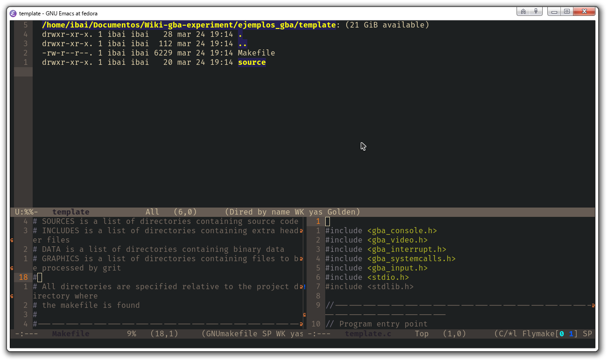
Ventana de emacs mostrando el directorio con la carpeta source y el archivo Makefile. Y mostrando parte del contenido de los ficheros de este directorio.
Este es el contenido completo del Makefile:
#---------------------------------------------------------------------------------
.SUFFIXES:
#---------------------------------------------------------------------------------
ifeq ($(strip $(DEVKITARM)),)
$(error "Please set DEVKITARM in your environment. export DEVKITARM=<path to>devkitARM")
endif
include $(DEVKITARM)/gba_rules
#---------------------------------------------------------------------------------
# TARGET is the name of the output
# BUILD is the directory where object files & intermediate files will be placed
# SOURCES is a list of directories containing source code
# INCLUDES is a list of directories containing extra header files
# DATA is a list of directories containing binary data
# GRAPHICS is a list of directories containing files to be processed by grit
#
# All directories are specified relative to the project directory where
# the makefile is found
#
#---------------------------------------------------------------------------------
TARGET := $(notdir $(CURDIR))
BUILD := build
SOURCES := source
INCLUDES := include
DATA :=
MUSIC :=
#---------------------------------------------------------------------------------
# options for code generation
#---------------------------------------------------------------------------------
ARCH := -mthumb -mthumb-interwork
CFLAGS := -g -Wall -O2\
-mcpu=arm7tdmi -mtune=arm7tdmi\
$(ARCH)
CFLAGS += $(INCLUDE)
CXXFLAGS := $(CFLAGS) -fno-rtti -fno-exceptions
ASFLAGS := -g $(ARCH)
LDFLAGS = -g $(ARCH) -Wl,-Map,$(notdir $*.map)
#---------------------------------------------------------------------------------
# any extra libraries we wish to link with the project
#---------------------------------------------------------------------------------
LIBS := -lmm -lgba
#---------------------------------------------------------------------------------
# list of directories containing libraries, this must be the top level containing
# include and lib
#---------------------------------------------------------------------------------
LIBDIRS := $(LIBGBA)
#---------------------------------------------------------------------------------
# no real need to edit anything past this point unless you need to add additional
# rules for different file extensions
#---------------------------------------------------------------------------------
ifneq ($(BUILD),$(notdir $(CURDIR)))
#---------------------------------------------------------------------------------
export OUTPUT := $(CURDIR)/$(TARGET)
export VPATH := $(foreach dir,$(SOURCES),$(CURDIR)/$(dir)) \
$(foreach dir,$(DATA),$(CURDIR)/$(dir)) \
$(foreach dir,$(GRAPHICS),$(CURDIR)/$(dir))
export DEPSDIR := $(CURDIR)/$(BUILD)
CFILES := $(foreach dir,$(SOURCES),$(notdir $(wildcard $(dir)/*.c)))
CPPFILES := $(foreach dir,$(SOURCES),$(notdir $(wildcard $(dir)/*.cpp)))
SFILES := $(foreach dir,$(SOURCES),$(notdir $(wildcard $(dir)/*.s)))
BINFILES := $(foreach dir,$(DATA),$(notdir $(wildcard $(dir)/*.*)))
ifneq ($(strip $(MUSIC)),)
export AUDIOFILES := $(foreach dir,$(notdir $(wildcard $(MUSIC)/*.*)),$(CURDIR)/$(MUSIC)/$(dir))
BINFILES += soundbank.bin
endif
#---------------------------------------------------------------------------------
# use CXX for linking C++ projects, CC for standard C
#---------------------------------------------------------------------------------
ifeq ($(strip $(CPPFILES)),)
#---------------------------------------------------------------------------------
export LD := $(CC)
#---------------------------------------------------------------------------------
else
#---------------------------------------------------------------------------------
export LD := $(CXX)
#---------------------------------------------------------------------------------
endif
#---------------------------------------------------------------------------------
export OFILES_BIN := $(addsuffix .o,$(BINFILES))
export OFILES_SOURCES := $(CPPFILES:.cpp=.o) $(CFILES:.c=.o) $(SFILES:.s=.o)
export OFILES := $(OFILES_BIN) $(OFILES_SOURCES)
export HFILES := $(addsuffix .h,$(subst .,_,$(BINFILES)))
export INCLUDE := $(foreach dir,$(INCLUDES),-iquote $(CURDIR)/$(dir)) \
$(foreach dir,$(LIBDIRS),-I$(dir)/include) \
-I$(CURDIR)/$(BUILD)
export LIBPATHS := $(foreach dir,$(LIBDIRS),-L$(dir)/lib)
.PHONY: $(BUILD) clean
#---------------------------------------------------------------------------------
$(BUILD):
@[ -d $@ ] || mkdir -p $@
@$(MAKE) --no-print-directory -C $(BUILD) -f $(CURDIR)/Makefile
#---------------------------------------------------------------------------------
clean:
@echo clean ...
@rm -fr $(BUILD) $(TARGET).elf $(TARGET).gba
#---------------------------------------------------------------------------------
else
#---------------------------------------------------------------------------------
# main targets
#---------------------------------------------------------------------------------
$(OUTPUT).gba : $(OUTPUT).elf
$(OUTPUT).elf : $(OFILES)
$(OFILES_SOURCES) : $(HFILES)
#---------------------------------------------------------------------------------
# The bin2o rule should be copied and modified
# for each extension used in the data directories
#---------------------------------------------------------------------------------
#---------------------------------------------------------------------------------
# rule to build soundbank from music files
#---------------------------------------------------------------------------------
soundbank.bin soundbank.h : $(AUDIOFILES)
#---------------------------------------------------------------------------------
@mmutil $^ -osoundbank.bin -hsoundbank.h
#---------------------------------------------------------------------------------
# This rule links in binary data with the .bin extension
#---------------------------------------------------------------------------------
%.bin.o %_bin.h : %.bin
#---------------------------------------------------------------------------------
@echo $(notdir $<)
@$(bin2o)
-include $(DEPSDIR)/*.d
#---------------------------------------------------------------------------------------
endif
#---------------------------------------------------------------------------------------
Abre el Makefile y analízalo. Y responde a estas cuestiones:
¿Qué regla nos genera el binario final?
Recuerda buscamos una ROM con extensión .gba
¿Podemos utilizar C++? Si es así, ¿Qué regla emplea compilador que toca?
Recuerda que CXX se refiere a C++ y CC a C.
Observa que se emplea la siguiente orden ARCH := -mthumb -mthumb-interwork, ¿esto quiere decir que el programa generado solo contendrá instrucciones Thumb?
Quizás pueda servirte de ayuda ejecutar el siguiente comando
Compilando
Estando en el mismo directorio de trabajo, abre el fuente source/template.c. Cuyo contenido es:
#include <gba_console.h>
#include <gba_video.h>
#include <gba_interrupt.h>
#include <gba_systemcalls.h>
#include <gba_input.h>
#include <stdio.h>
#include <stdlib.h>
//---------------------------------------------------------------------------------
// Program entry point
//---------------------------------------------------------------------------------
int main(void) {
//---------------------------------------------------------------------------------
// the vblank interrupt must be enabled for VBlankIntrWait() to work
// since the default dispatcher handles the bios flags no vblank handler
// is required
irqInit();
irqEnable(IRQ_VBLANK);
consoleDemoInit();
// ansi escape sequence to set print co-ordinates
// /x1b[line;columnH
iprintf("\x1b[10;10HHello World!\n");
while (1) {
VBlankIntrWait();
}
}
¿Qué hace este código?
-
irqInit()prepara el despachador de interrupciones en la memoria. -
irqEnable(IRQ_VBLANK)dicta que se dibuja a fotograma completo (Vertical blanking) (59.73 Hz). -
consoleDemoInit();habilita modo 0 y permite el renderizado de texto de prueba. -
iprintf("\x1b[10;10HHello World!\n");es elprintfde toda la vida pero optimizado para utilizar enteros como coordenadas. -
VBlankIntrWait();espera hasta tener que renderizar el frame siguiente. Ahorrando batería de este modo.
¿Sabías que el bucle while(1)...?
El bucle while está presente en toda aplicación que precise de algún tipo de interacción. Este es un concepto fundamental para evitar que un juego se cierre al instante. Durante este bucle se lleva a cabo un el renderizado. Es importante poner un límite (como el límite de frames) para evitar una sobrecarga del procesador y garantizar una experiencia semejante en toda gama de equipos y evitar fallos gráficos o reproducción de cinemáticas desincronizadas.
Para compilar escribe en la raíz donde está el Makefile lo siguiente en una terminal:
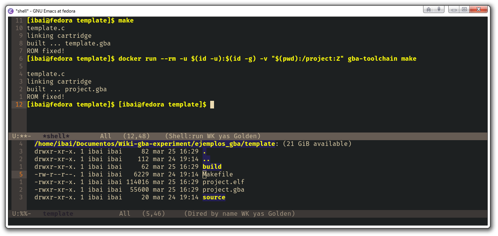
Ventana de emacs mostrando el directorio template (donde se encuentra el archivo Makefile y la carpeta source). Compilando con make y mostrando los ficheros de salida de este directorio.
Idealmente habremos conseguido el cartucho .gba ¡Vamos a meterlo en el emulador mgba!
Ejecutando
Ahora que tenemos .gba podemos invocar al emulador para que corra la ROM así:
Posteriormente desde ha barra de menús activa:
-
Herramientas > Game State Views > Ver paleta...
-
Herramientas > Game State Views > Ver sprites...
-
Herramientas > Game State Views > Ver mosaicos...
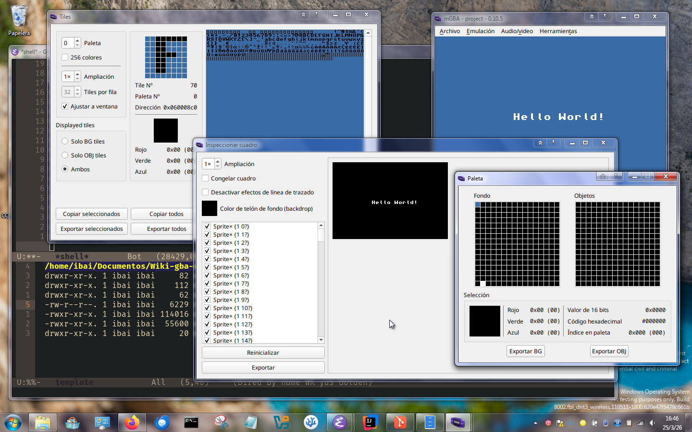
Ventanas de mgba ejecutando la ROM que acabamos de compilar junto a otras ventanas que nos proporcionan información sobre el vídeo (tiles, sprites y paleta). Nota: la captura puede generar confusión pero se trata de un sistema operativo GNU/Linux completo y no Windows.
¿Qué estamos viendo exactamente?
-
El emulador mgba está corriendo la ROM pasada por parámetro. Está ejecutando el archivo compilado con el texto "Hello World!" centrado en la pantalla.
-
Visor de tiles: Aquí se ve de forma gráfica que la GBA no tiene un modo texto. En el panel grande se ve toda la fuente tipográfica (el abecedario, números y símbolos) cargada en la memoria de video (VRAM) como gráficos. Está seleccionado la baldosa número 70, que corresponde a la letra "F".
-
Visor de paleta: Está mostrando los colores disponibles en la memoria de la GBA. A la izquierda está la paleta del fondo y a la derecha la de los objetos. Como es un "Hello World" básico, la paleta del fondo es casi toda negra, con un único índice blanco para dibujar las letras, otro cian para el resto.
-
Inspector de cuadro: Permite visualizar cómo ha renderizado el fotograma actual capa por capa. Muestra el color de fondo (backdrop) negro (alterado por utilizar el cambio de color) y una lista de sprites (aunque aquí no se están usando, ya que el texto se dibuja en la capa de fondo.
Alterando la ejecución con el visor de memoria
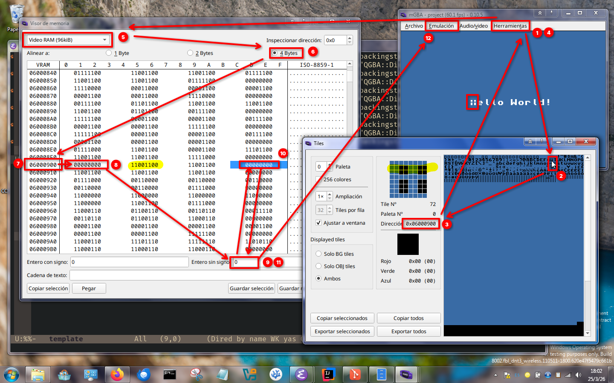
Ventanas de mgba ejecutando la ROM compilada junto a otras dos ventanas que nos proporcionan información sobre el vídeo y memoria. Es recorrido por la interfaz de menús del emulador para conseguir el resultado de "vandalizar" la letra "H".
Vamos a vandalizar la letra "H" de nuestra aplicación manipulado directamente la memoria, sigue estos pasos.
-
Abre el visor de tiles.
-
Busca el caracter "H" en el panel.
-
Observa su dirección (
0x06000900) -
Abre el visor de memoria.
-
Selecciona la VRAM.
-
(Opcional) Escoger alineación de 4 Bytes.
-
Busca o escribe la dirección de memoria (para esto introducir la dirección en el campo "Inspeccionar dirección:").
-
Selecciónala.
-
Cambia a
0el campo "Entero sin signo". -
Repite el mismo proceso pero para quitar la línea horizontal de la letra "H".
-
Cambia a
0 -
Reanuda la ejecución.
Nota: Los bits están al revés de cómo se representa un sprite.
¿Qué cambios harías en el código para poder desplazar el texto según la entrada de la cruceta? Inspecciona por tu cuenta las cabeceras de template.c
#include <gba_console.h>
#include <gba_input.h>
#include <gba_interrupt.h>
#include <gba_systemcalls.h>
#include <gba_video.h>
#include <stdio.h>
int
main (void)
{
int x = 10, y = 10;
int old_x = x, old_y = y;
u16 input;
irqInit ();
irqEnable (IRQ_VBLANK);
consoleDemoInit ();
iprintf ("\x1b[%d;%dHHello World!", y, x);
while (1)
{
scanKeys ();
input = keysHeld ();
old_x = x;
old_y = y;
if (input & KEY_DOWN)
++y;
if (input & KEY_UP)
--y;
if (input & KEY_RIGHT)
++x;
if (input & KEY_LEFT)
--x;
if (x < 0)
x = 0;
if (x > 18)
x = 18;
if (y < 0)
y = 0;
if (y > 19)
y = 19;
if (x != old_x || y != old_y)
{
iprintf ("\x1b[%d;%dH ", old_y, old_x);
iprintf ("\x1b[%d;%dHHello World!", y, x);
}
VBlankIntrWait ();
}
}
}
Práctica 2: Depuración remota. Otras utilidades. Nivel de instrucción.
En esta sección: analizaremos el binario producido en la anterior parte, obtendremos su CFG, aplicaremos la teoría estudiada en las materias afines a la Ingeniería de los Computadores y finalmente utilizaremos el depurador gdb para examinar paso por paso la ejecución.
Si bien es cierto que en la realidad cuando queramos hacer ingeniería inversa no conocemos el código fuente, aquí sin embargo sí que lo conocemos para poder generarlo. Asimismo, es muy poco probable encontrar binarios con información de depuración debido a que expone directamente el código fuente. Sin embargo, al ser una práctica introductoria puede ser conveniente dejar este tipo de cuestiones a un lado, y dedicar las utilidades de las herramientas aquí expuestas.
Preparando el programa
Vamos a remplazar el código fuente de template.c por el siguiente contenido y luego lo compilamos.
#include <gba_console.h>
#include <gba_input.h>
#include <gba_interrupt.h>
#include <gba_systemcalls.h>
#include <gba_video.h>
#include <stdio.h>
// Usamos volatile para obligar al gcc a guardarlo en la ROM y no optimizarlo
volatile float secret_float = 99.99f;
// Evitamos que el compilador fusione esta función con el main
__attribute__ ((noinline)) void
check_access (u16 keys)
{
if (keys & KEY_A)
{
iprintf ("\x1b[12;5H-> ACCESS GRANTED <-\n");
if (secret_float == 3.14f)
iprintf ("\x1b[14;5HFloat check OK! \n");
}
else if (keys & KEY_B)
{
iprintf ("\x1b[12;5H-> ACCESS DENIED <-\n");
iprintf ("\x1b[14;5H \n");
}
}
int
main (void)
{
irqInit ();
irqEnable (IRQ_VBLANK);
consoleDemoInit ();
iprintf ("\x1b[5;5H[ TARGET RE EXERCISE ]");
iprintf ("\x1b[8;5HPress A or B button...");
while (1)
{
VBlankIntrWait ();
scanKeys ();
u16 keys_pressed = keysDown ();
if (keys_pressed)
{
check_access (keys_pressed);
}
}
}
Debida la sencillez del programa, no modificaremos nada del Makefile para evitar optimizaciones.
Después de compilar el programa vamos a familiarizarnos con una pequeña herramienta que nos dice el tipo de archivo es un fichero. Esta aplicación es file y no se basa únicamente en el nombre de la extensión sino examina el contenido del binario en busca de patrones y números mágicos que delaten el tipo de archivo ante el que nos encontramos. ¡Pruébalo!
file project.gba
file template.gba
# XXX.gba: Game Boy Advance ROM image: "XXX" (000000, Rev.00)
file project.elf
file template.elf
# XXX.elf: ELF 32-bit LSB executable, ARM, EABI5 version 1 (SYSV), statically linked, with debug_info, not stripped
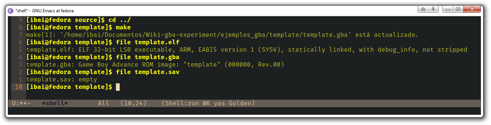
Ventanas de emacs para examinar archivos con file.
También tenemos ldd que nos identifica qué dependencias dinámicas utiliza cierto programa.
Fíjate en que el .elf pesará más por la información de depuración.
Ejecutando el programa original
Procura no consultar el fuente.
Supongamos que nos proporcionan los dos binarios (.gba y .elf). Hay cierta parte de la ejecución en la que no podemos acceder y tú deber es alterar directamente el binario para poder acceder a esta parte del código. Lo que sabemos del programa es que si oprimimos A, tenemos acceso pero si conocemos la clave también accederemos a la parte secreta. Si pulsamos B sale un mensaje de acceso denegado.
Ejecuta el .elf y trastea.
Obteniendo CFG
El objetivo es comprender el flujo de ejecución del programa sin llegar a ejecutarlo, leyendo el código ensamblador generado por el compilador. Procedamos con la examinación de la ejecución del programa y visualizarlo como un grafo de complejidad ciclomática.
Este tipo de visualización nos proporciona información de las bifurcaciones del programas. Además muestra los mnemotécnicos de cada instrucción y símbolo identificado.
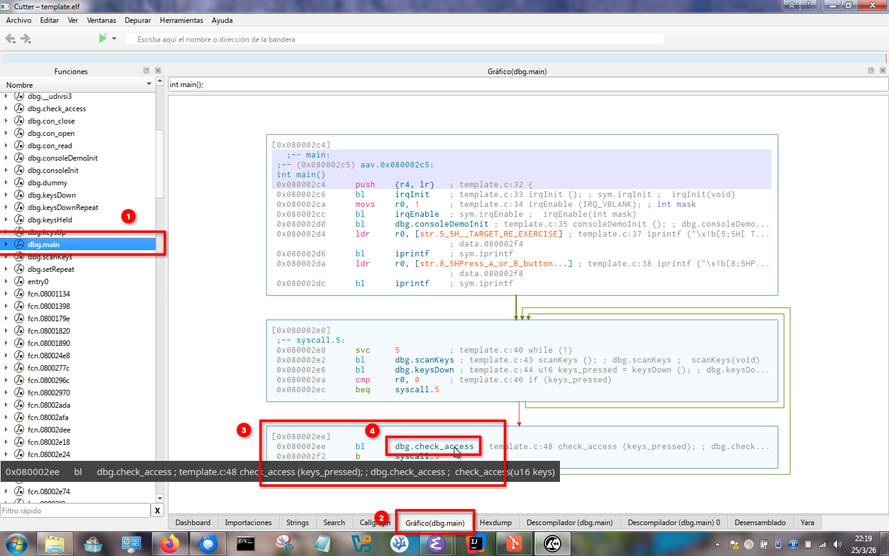
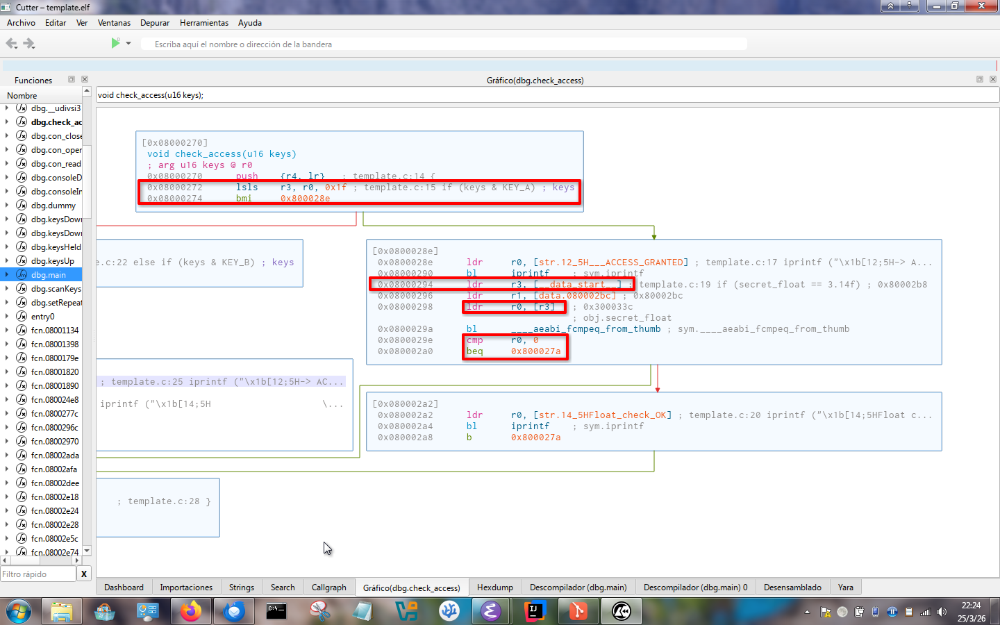
Ventanas de cutter donde se examina nuestro compilado.
Inicialmente, buscamos la función principal (main). En el panel central, la vista de Gráfico traduce el código máquina en bloques visuales. El recuadro rojo (marcadores 3 y 4) revelan que el programa tras detectar que se ha pulsado un botón, realiza una llamada (bl - Branch with Link) a la subrutina dbg.check_access.
Continuando por esta rutina, el gráfico muestra claramente las bifurcaciones (las flechas verdes y rojas) que corresponden a las sentencias if / else de nuestro código. El primer resalte en rojo muestra instrucciones de bits (lsls y bmi) que evalúan qué botón se pulsó (comparando con KEY_A). Si el camino es correcto, la ejecución baja al siguiente bloque (segundo recuadro rojo). Aquí vemos cómo el programa carga una cadena de texto ("ACCESS GRANTED") y, justo debajo, busca nuestra variable flotante en la memoria (ldr r3, [__data_start__]). A continuación, se invoca una función interna de la librería de ARM (__aeabi_fcmpeq_from_thumb) que se encarga de comparar números decimales, culminando en un cmp r0, 0 (tercer recuadro) que decidirá si dibuja el mensaje de Float check OK!.
Los comentarios insertados por el depurador son de vital ayuda para el entendimiento de lo que ocurre.
Modificando el binario
En esta ocasión, nuestra motivación consistiré en localizar y en entender cómo se almacenan los datos en el binario crudo, y comprobar el resultado en tiempo real.
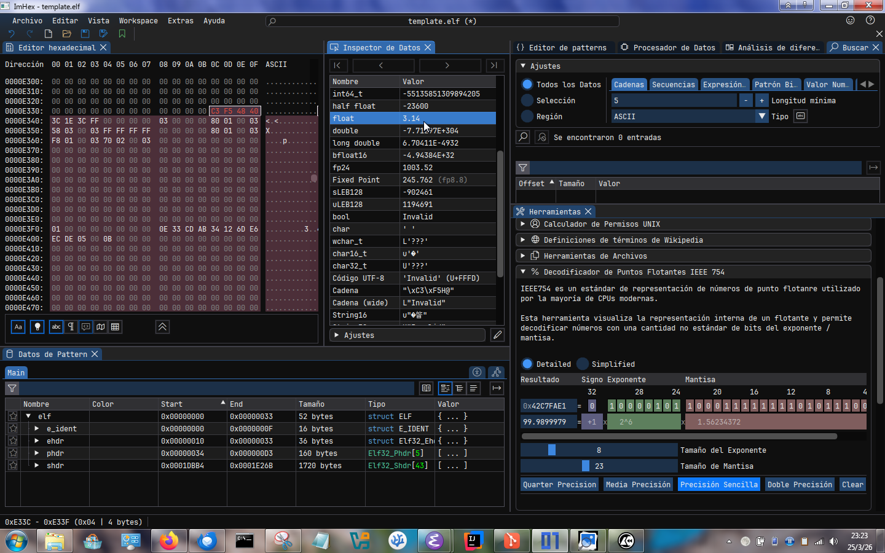
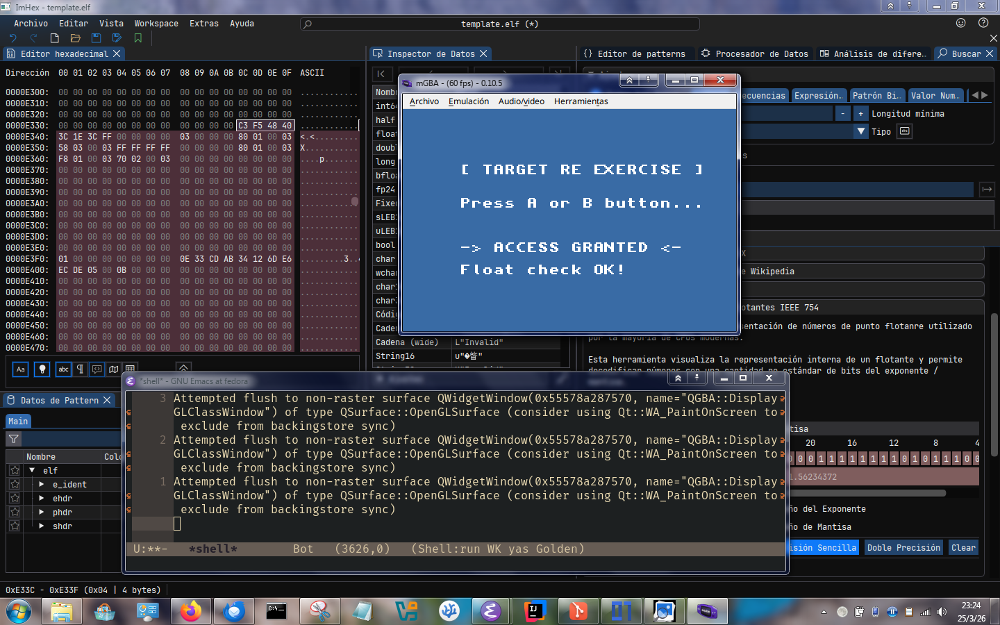
Ventanas de imhex donde se examina nuestro compilado.
Vamos a buscar la ubicación del número 99.99 en flotante simple. Y luego, encontrar la variable float y modificarla a 3.14. Cabe remarcar que la GBA es little endian, porque la correcta interpretación del número de está al revés
Finalmente desbloqueamos el mensaje oculto Float check OK! (le proporcionamos el valor 3.14 que el programa esperaba).
Depuración remota
El proceso de depuración puede llevarse a cabo de forma inalámbrica hoy en día. De hecho es una práctica bastante común. Por ejemplo: depurar Firefox en móvil con la inspección desde la versión de escritorio de Firefox, los programas Java con maven en IntelliJ abren un puerto concreto para esto (5005)...
En nuestro caso, los emuladores proporcionan una opción para habilitar un puerto de red y utilizar el stub del gdb. Esta es una interfaz y un protocolo completo para la envío de comandos del depurador y recepción de estos. Esta práctica es común en hardware real también.
Referencias
-
Artículo de Wikipedia sobre GBA, Game Boy Advance (5/3/2026) ↩
-
Emisión grabada de Francisco Gallego en YouTube, Programando videojuegos en ensamblador para Game Boy. Introducción a GBTelera (5/3/2026); Repositorio git de Francisco Gallego en github, GBTelera (6/3/2026) ↩↩
-
Artículo traducido de Rodrigo Copetti en su blog, Arquitectura Game Boy Advance (5/3/2026) ↩↩↩↩↩↩↩
-
Pregunta frecuente respondida, ¿Se puede jugar a juegos de Game Boy Advance en Nintendo 3DS? (9/3/2026) ↩
-
Artículo de Rodrigo Copetti en su blog, Nintendo DS Architecture (5/3/2026) ↩↩↩
-
Vídeo de John Cartwright en YouTube, 3DS Can Play Game Boy Advance Games Without Emulation (9/3/2026) ↩
-
Artículo de xataca, Comienza la nueva era de los Mac ARM de Apple: qué podemos esperar de los futuros iMac y MacBook (9/3/2026); Artículo de ARM, 99% of all Smartphones Powered by ARM (9/3/2026) ↩
-
Transparencias en línea sobre el tratamiento de los riesgos de adelantamiento por profesorado de la Universidad Carlos III de Madrid, Tema 6. Introducción a la segmentación avanzada: Riesgos (9/3/2026); Transparencias de las asignaturas Ingeniería de los Computadores y Arquitectura de los Computadores del grado de Ingeniería Informática ofertado en la Universidad de Alicante (9/3/2026) ↩
-
Documentación técnica en línea de Pan Docs, Foreword - Pan Docs (7/3/2026); Alternativa de la documentación de Pan Docs en formato PDF, Game Boy: Complete Technical Reference (7/3/2026) ↩↩
-
Documentación técnica en línea de Tonc, Foreword - Tonc (7/3/2026) ↩↩↩↩↩↩
-
Documentación técnica en línea de gbadoc, Graphics Hardware Overview (19/3/2026) ↩
-
Documentación "ASCII" (solo texto) técnica en línea de gbatek, gbatek (7/3/2026) ↩↩↩
-
Vídeo de Jacob Helgason en YouTube, Building World Maps for the GBA (19/3/2026) ↩↩↩
-
Vídeo de Guillem Salvadó sobre 3D en GBA en YouTube, Juegos de Game Boy Advance en 3D (6/3/2026); Vídeo de Dimitris Giannakis en Youtube, How Graphics worked on the Nintendo Game Boy Advance (6/3/2026) ↩
-
Documentación de ARMv7TDMI en formato pdf, ARM7TDMI (Rev 3) Core Processor (Product Overview) (5/3/2026); Documentación de ARMv7TDMI en línea, ARM7TDMI (Rev 3) Core Processor (6/3/2026); Alternativa de documentación de ARMv7TDMI en el repositorio git de Sasank Chilamkurthy en github, ARM7 (6/3/2026) ↩↩↩
-
Enciclopedia en línea para tutoriales por el equipo de devkitPro, Getting started (5/3/2026); Repositorio git del equipo devkitPro en github, libgba (6/3/2026); Repositorio git del equipo devkitPro en github con herramientas para el desarrollo en GBA, gba-tools (6/3/2026); Repositorio git del equipo devkitPro en github con de ejemplos de ROMs GBA, gba-examples (6/3/2026) ↩
-
Manual de uso en PDF alojado en el repositorio git en sourcewave, Debugging with GDB (7/3/2026) ↩
-
Artículo de GNU sobre la obsolencencia, Obsolescencia en el software privativo (12/3/2026) ↩
-
Artículo de la Wikipedia sobre Ingeniería inversa, Ingeniería inversa (12/3/2026) ↩
-
Página de bienvenida de SAMBA, Opening Windows to a Wider World (12/3/2026) ↩
-
Transparencias en línea sobre la ingiería inversa por Joxean Koret, Una Brevísima Introducción a la Ingeniería Inversa (7/3/2026) ↩↩
-
Vídeo de BaityBait en YouTube, DENUVO: El sistema ANTIPIRATERÍA MÁS POLÉMICO (12/3/2026); Artículo de GameRynxo sobre Denuvo, Qué es Denuvo: El Guardián Digital de los Videojuegos Explicado a Fondo (13/3/2026) ↩
-
Artículo de la Wikipedia sobre Pruebas funcionales, Pruebas funcionales (12/3/2026); Transparencias de la asignatura Planificación y Pruebas de Sistemas Software del grado de Ingeniería Informática ofertado en la Universidad de Alicante (12/3/2026); Artículo de Juan José Santos Chavez sobre pruebas de caja negra, ¿Qué son las pruebas de caja negra? Todo lo que debes saber (12/3/2026) ↩
-
Artículo explícito de vulnerabilidades CVE sobre VirtualBox, CVE-2025-30712 (15/3/2026) ↩
-
Portal de bienvenida de GNU Emacs, An extensible, customizable, free/libre text editor — and more. (13/3/2026); Repositorio git de Doom Emacs en github, [https://github.com/doomemacs/doomemacs] (13/3/2026); Chuleta de Emacs, refcard.pdf (13/3/2026) ↩
-
Apuntes de la asignatura Lenguajes y Paradigmas de Programación del grado de Ingeniería Informática ofertado en la Universidad de Alicante, Tema 1: Historia y conceptos de los lenguajes de programación (15/3/2026); Seminario de Scheme (dialecto de LISP) de la asignatura Lenguajes y Paradigmas de Programación del grado de Ingeniería Informática ofertado en la Universidad de Alicante, Seminario 1: Seminario de Scheme (15/3/2026) ↩
-
Portal de bienvenida de Neovim, hyperextensible Vim-based text editor (13/3/2026); Portal de bienvenida de Nvchad, Enhance your Neovim workflow (13/3/2026); Vim - the ubiquitous text editor (13/3/2026); Artículo de Manuel León en arsys sobre el uso de vim, Comandos Vim: los atajos imprescindibles para trabajar con él (13/3/2026) ↩
-
Portal de bienvenida de la familia de editores de JetBrains, JetBrains (13/3/2026) ↩↩
-
Artículo de MDN sobre Service Workers en el navegador web, Service Worker API (15/3/2026) ↩
-
Artículo de MDN sobre WebAssembly en el navegador web, WebAssembly (15/3/2026) ↩
-
Repositorio git con listados de programas para edición de hexadecimal en github, awesome-hex-editors (15/3/2025) ↩↩↩↩
-
Portal de bienvenida de ImHex, A modern, featureful Hex Editor for Reverse Engineers and Developers (13/3/2026); Repositorio git oficial de WerWolv en github, ImHex (15/3/2026) ↩↩
-
Portal de bienvenida de okteta, KDE Okteta (13/3/2026) ↩
-
Herramienta en línea para la edición en hexadecimal, hexed.it (13/3/2026) ↩
-
Paper sobre compiladores por Amit Kasar y Mayuri Dangare en researchgate, Compiler And Its Phases (15/3/2026) ↩
-
Documento sobre el estándar (muy) (y mucho) (bastante) (y contemporáneamente) moderno de C++, Modern C++ Programming (18/3/2026) ↩
-
Página de paquetería y herramientas de Kali Linux Edb-debugger (13/3/2026) ↩
-
Artículo de Wikipedia sobre decompiladores, Decompilador (18/3/2026) ↩↩
-
Recompilación de diversos decompiladores en línea, Decompiler Explorer (18/3/2026) ↩
-
Portal de bienvanida de hex-rays, IDA Pro: A powerful disassembler, decompiler and a versatile debugger. In one tool. (7/3/2026) ↩
-
Repositorio git oficial de la Agencia de Seguridad Nacional Estadounidense en github, Ghidra is a software reverse engineering (SRE) framework (7/3/2026) ↩
-
Respositorio git del equipo rizinorg en github, Cutter (7/3/2026) ↩
-
Portal de bienvenida de JetBrains dotPeek, dotPeek (18/3/2026) ↩
-
Repositorio git de cfr en github, CFR - Another Java Decompiler \o/ (18/3/2026) ↩
-
Enciclopedia wiki en línea dedicada a la decompilación, Decompiler Directory (18/3/2026) ↩↩
-
Artículo por Starcube Labs sobre realizar ingeniería inversa en títulos de GBA, Reverse Engineering a GBA (18/3/2026) ↩
-
Artículo de Wikipedia sobre Cheat Engine, Cheat Engine (18/3/2026); ↩
-
Vídeo de Guillem Salvadó sobre trucos manipulando la memoria en YouTube, ¿Cómo funcionan los CHEAT CODES en juegos? (18/3/2026); Vídeo de Guillem Salvadó sobre manipulación de RAM en Youtube, Hackeando Super Mario 64 (18/3/2026) ↩
-
Práctica 1 de Administración de Sistemas Operativos y Redes de los Computadores por Ivan Parkhomchyk Patapchyk en github, Instalación, implementación y evaluación de sistemas operativos de escritorio (18/3/2026) ↩
-
Repositorio git del equipo lovebrew en github, LÖVE Potion (6/3/2026) ↩
-
Portal de bienvenida de GB Studio Central, A quick and easy to use drag and drop retro game creator for your favourite handheld video game system. (6/3/2026) ↩
-
Noticia en el blog de GB Studio Central por Emi Paternostro, Nike Promotes an Air Jordan Release with Cosmic Climb (6/3/2026); Noticia en el blog de GB Studio Central por Emi Paternostro, McDonald’s Celebrates Grimace’s Birthday with a GB Studio Game (6/3/2026) ↩
-
Portal de bienvenida de mGBA, mGBA (7/3/2026); Conjuntos de repositorios git relacionados con mGBA en github, mGBA (7/3/2026) ↩
-
Enciclopedia en línea sobre el estado de la emulación, Game Boy (Color) emulators (6/3/2026); Enciclopedia en línea sobre el estado de la emulación, Game Boy Advance emulators (6/3/2026) ↩
-
Artículo de Wikipedia sobre el caso Sega v. Accolade, Sega v. Accolade (7/3/2026) ↩
-
Artículo archivado del The New York Times sobre el caso Sony v. Connectix, Court Says Software Maker Can Emulate Sony's PlayStation (7/3/2026) ↩
-
Artículo de The Verge sobre sobre el caso Yuzu, Nintendo Switch emulator Yuzu will utterly fold and pay $2.4M to settle its lawsuit (7/3/2026) ↩↩
-
Artículo de McNeelyLaw sobre la legalidad de la emulación, https://www.mcneelylaw.com/understanding-the-legal-landscape-of-video-game-emulation/ (7/3/2026) ↩
-
Vídeo de Lazo Velko sobre C++ en YouTube, The worst programming language of all time (25/03/2026) ↩